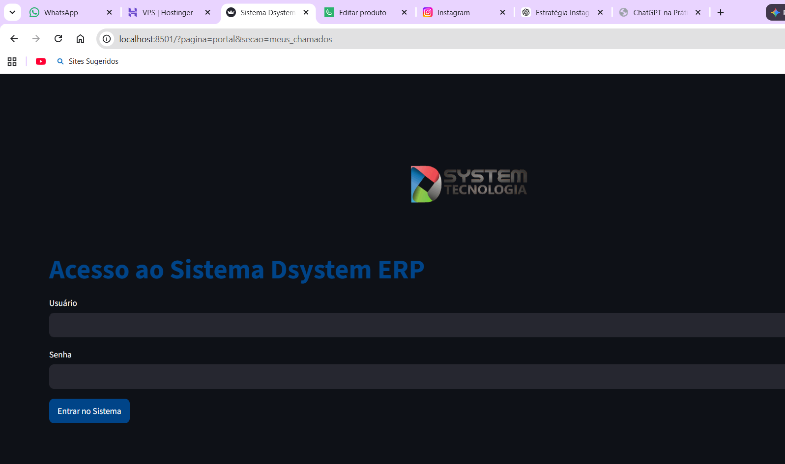

Projeto principal
Dsystem ERP
Sistema de gestão empresarial criado para centralizar processos operacionais e administrativos.
Problema
Processos e informações dispersos.
Solução
Uma plataforma integrada e modular.
- ✓ Ordens de serviço
- ✓ Estoque e compras
- ✓ Financeiro e contratos
- ✓ Portal do cliente
- ✓ Migrações e testes
- ✓ Rotinas de deploy
PythonStreamlitMySQL